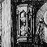

Some, such as Sleep and Love, were never human. From this class an individual daemon is allotted to each human being as his ‘witness and guardian’ through life.
— C. S. Lewis (1898–1963), The Discarded Image
A great Daemon… Through him subsist all divination, and the science of sacred things as it relates to sacrifices, and expiations, and disenchantments, and prophecy, and magic… he who is wise in the science of this intercourse is supremely happy…
— Plato (c.427–347 B.C.), The Symposium, in the translation by Percy Bysshe Shelley (1792–1822)
 To medieval philosophers, daemons were the intermediaries of God, hovering invisibly over the world and interfering with it. They may be guardian spirits of places or people. So also with Inform: a daemon is a meddling spirit, associated with a particular game object, which gets a chance to interfere once per turn while it is ‘active’. ‘Advent’ has five: one to deplete the lamp's batteries, three to move the bear, the pirate and the threatening little dwarves and one to close the cave when all the treasures have been collected. Though there isn't much to say about daemons, they are immensely useful, and there are some rule-based design systems for interactive fiction in which the daemon is a more fundamental concept than the object. (The early 1980s system by Scott Adams, for instance.)
The daemon attached to an object is its daemon
routine, if one is given. However, a daemon is normally inactive, and
must be explicitly activated and deactivated using the library
routines
StartDaemon(object); StopDaemon(object);
Daemons are often started by a game's Initialise
routine and sometimes remain active throughout. When active, the daemon
property of the object is called at the end of each turn, regardless
of where that object is or what the circumstances, provided only that
the player is still alive. This makes daemons useful for ‘tidying-up
operations’, putting rooms back in order after the player has moved
on, or for the consequences of actions to catch up with the player.
•▲
EXERCISE 42
Many games contain “wandering monsters”, characters who
walk around the map. Use a daemon to implement one who wanders as freely
as the player, like the gentleman thief in ‘Zork’.
•▲
EXERCISE 43
Use a background daemon to implement a system of weights, so that the
player can only carry a certain weight before strength gives out and
something must be dropped. It should allow for feathers to be lighter
than lawn-mowers.
· · · · ·
It's also possible to attach a timer to an object.
(In other design languages, timers are called “fuses”.)
To set up a timer, you need to give an object two properties:
time_left and time_out. Like daemons, timers
are inactive until explicitly started:
StartTimer(object, time);
will set object.time_left to time.
This value will be reduced by 1 each turn, except that if this would make
it negative, the Inform library instead sends the message
object.time_out()
once and once only, after which the timer is deactivated
again. You're free to alter time_left yourself: a value
of 0 means “will go off at the end of the present turn”,
so setting time_left to 0 triggers immediate activation.
You can also deactivate the timer, so that it never goes off, by calling
StopTimer(object);
•
EXERCISE 44
Construct an egg-timer which runs for three turns.
▲
At most 32 timers or daemons can be active at the same time, together
with any number of inactive ones. This limit of 32 is easily raised,
though: just define the constant MAX_TIMERS to some larger
value, putting the definition in your code before "Parser.h"
is included.
· · · · ·
There is yet a third form of timed event. If a
room provides an each_turn routine, then the library
will send the message
location.each_turn()
at the end of every turn when the player is present.
Similarly, for every object O which is near the player
and provides each_turn:
O.each_turn()
will be sent every turn. This would be one way to
code the sword of ‘Zork’, for instance, which begins to
glow when monsters are nearby. each_turn is also convenient
to run creatures which stay in one place and are only active when the
player is nearby. An ogre with limited patience can therefore have an
each_turn routine which worries the player (“The
ogre stamps his feet angrily!” and so forth) while also having
a timer set to go off when patience runs out.
▲
“Near the player” actually means “in scope”,
a term which will be properly defined in §32
but which roughly translates as “in the same place and visible”.
You can change the scope rules using an InScope routine,
say to make the ‘Zork I’ thief audible throughout the
maze he is wandering around in. In case you want to tell whether scope
is being worked out for ordinary parsing reasons or instead for each_turn
processing, look to see whether the scope_reason variable
has the value EACHTURN_REASON. (Again, see
§32 for more.)
▲
It is safe to move an object when its own each_turn rule
is running, but not to move any other objects which are likely to be
in scope.
•
EXERCISE 45
(‘Ruins’.) Make “the sound of scuttling claws”
approach in darkness and, after 4 consecutive turns in darkness, kill
the player.
•▲
EXERCISE 46
Now try implementing the scuttling claws in a single object definition,
with no associated code anywhere else in the program, not even a line
in Initialise, and without running its daemon
all the time.
· · · · ·
The library also has a limited ability to keep track
of time of day as the game goes on. The current time is held in the
variable the_time and runs on a 24-hour clock: this variable
holds the number of minutes since midnight, so it takes values between
0 and 1439. The time can be set by
SetTime(60 × ‹hours› + ‹minutes›,
‹rate› );
The rate controls how rapidly time
is moving: a rate of 0 means it is standing still, that
is, that the library doesn't change it: your routines still can.
A positive rate means that that many minutes pass between
each turn, while a negative rate means that many turns pass between
each minute. It's usual for a timed game to start off the clock by
calling SetTime in its Initialise routine.
The time will appear on the game's status line, replacing the usual
listing of score and turns, if you set
Statusline time;
as a directive at the start of your source code.
•
EXERCISE 47
How could you make your game take notice of the time passing midnight,
so that the day of the week could be nudged on?
•▲
EXERCISE 48
Make the lighting throughtout the game change at sunrise and sunset.
· · · · ·
▲ Here is exactly what happens at the end of each turn. The sequence is abandoned if at any stage the player dies or wins.
each_turn takes place for the current room,
and then for every object in scope.TimePasses is called,
if the game provides such a routine.moved attribute, and score is awarded
if appropriate (see §22).•▲
EXERCISE 49
Suppose the player is magically suspended in mid-air, but that anything
let go of will fall out of sight. The natural way to code this is to
use a daemon which gets rid of anything it finds on the floor: this
is better than trapping Drop actions because objects
might end up on the floor in many different ways. Why is each_turn
better still?
•
EXERCISE 50
How would a game work if it involved a month-long archaeological dig,
where anything from days to minutes pass between successive game turns?
•
REFERENCES
Daemons abound in most games. Apart from ‘Advent’, see
the flying tortoise from ‘Balances’ and the chiggers from
‘Adventureland’. For more ingenious uses of daemon,
see the helium balloon and the matchbook from ‘Toyshop’.
•Typical timers include the
burning match and the hand grenade from ‘Toyshop’, the
endgame timer from ‘Advent’ and the ‘Balances’
cyclops (also employing each_turn).
•‘Adventureland’
makes much use of each_turn: see the golden fish, the mud,
the dragon and the bees.
•The chapter of ‘Jigsaw’
set on the Moon runs the clock at rate −28, to allow for
the length of the lunar day.
•The library extension
"timewait.h" by Andrew Clover thoroughly implements
time of day, allowing the player to “wait until quarter past
three”.
•Whereas Erik Hetzner's
"printtime.h" does just the reverse: it prints out
Inform's numerical values of time in the form of text like “half
past seven”. Erik is also author of "timepiece.h",
which models watches and clocks, allowing them to run slow or fast
compared to the library's absolute notion of time. (As yet nobody has
needed a relativistic world model.)